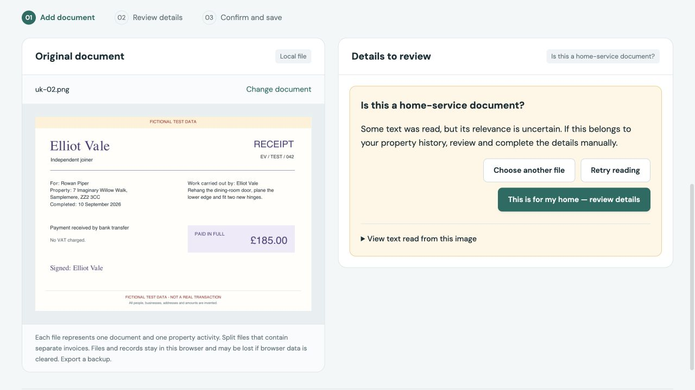
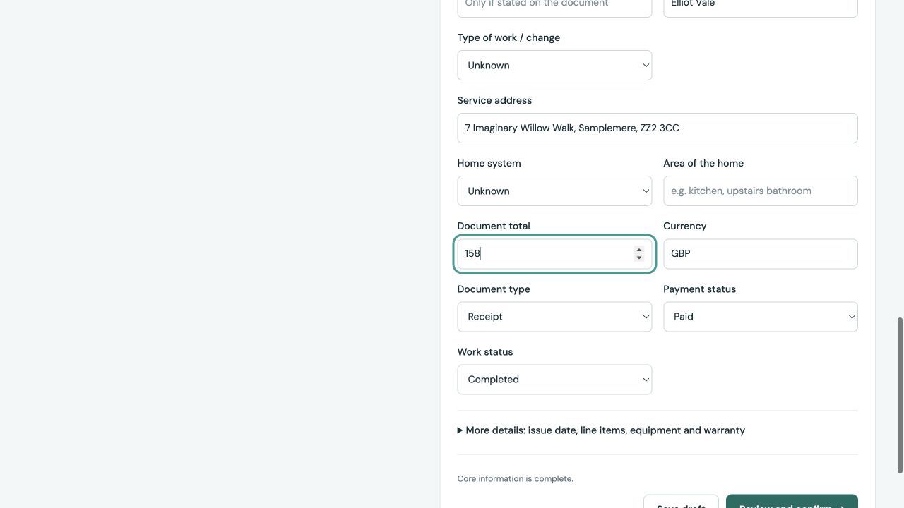
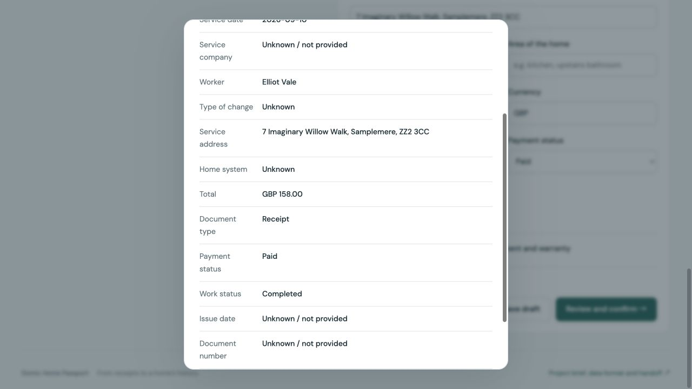
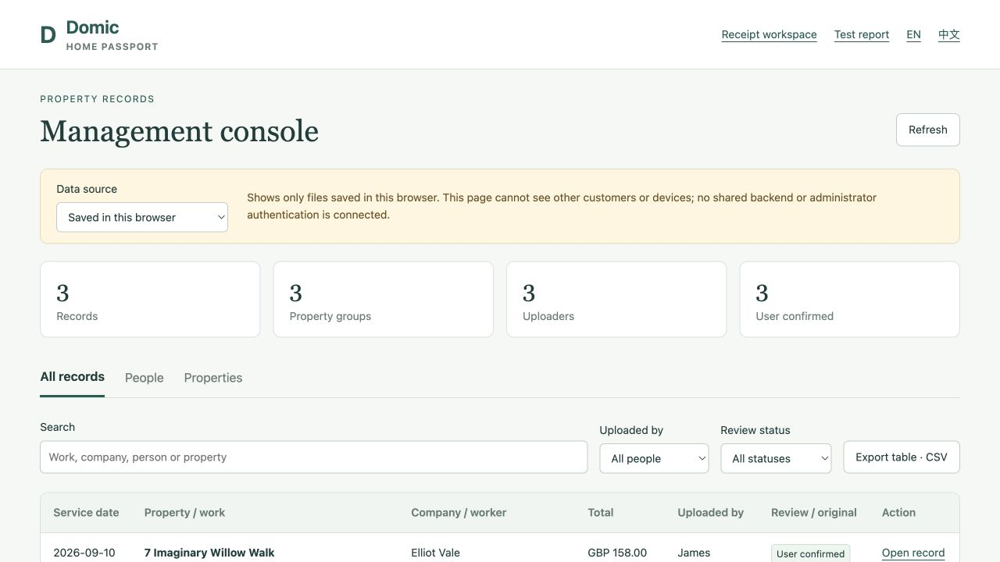
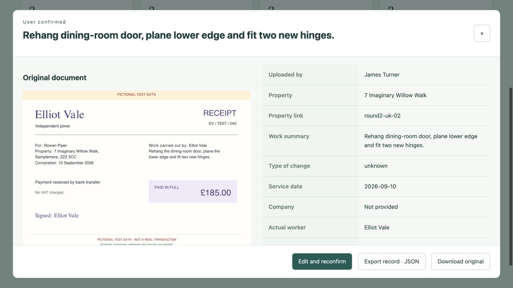
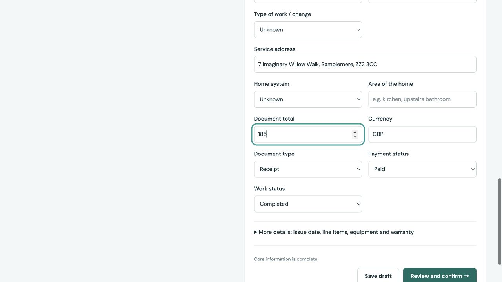
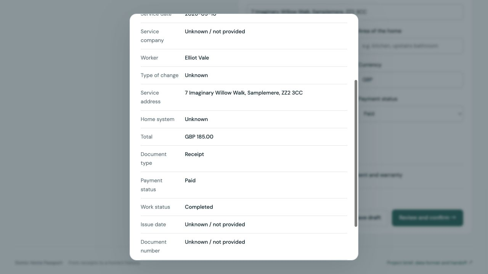
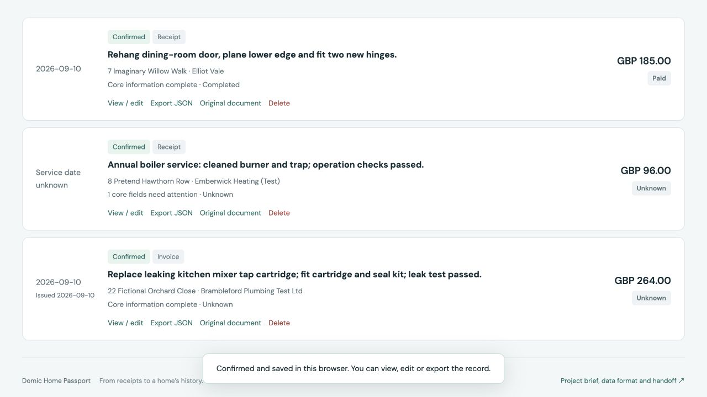
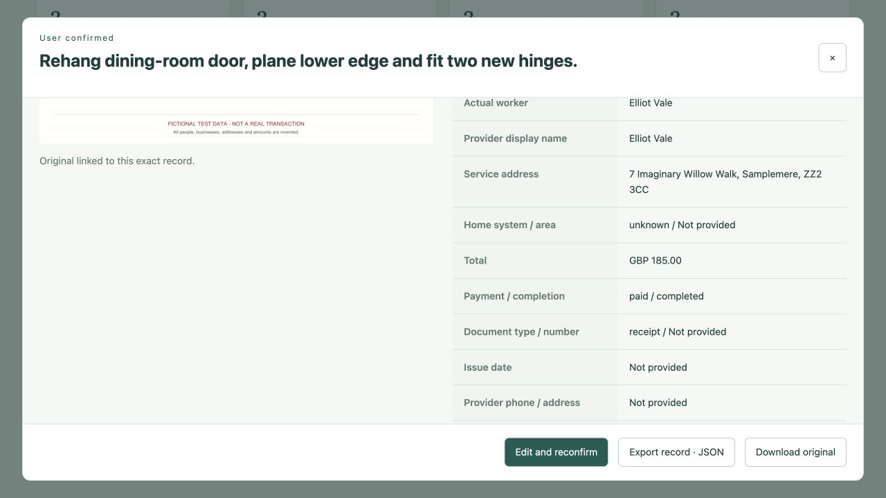

展开查看本案例的逐步截图
D01 / 系统先询问是否属于房屋服务
操作：上传 uk-02.png 独立木工票据，原件总额为 £185。

首先出现页面提示 Is this a home-service document?，需要人工判断相关性。这个案例随后会故意把原件 £185 手误填成 £158，验证保存后如何纠错；这不是 OCR 识别错误。下一步：进入可编辑表单，再完成这次受控的手误演示。
D02 / 故意模拟手误：185 被填成 158
操作：确认这是房屋服务，填写木工维修、Elliot Vale、地址和日期；金额故意填为 158。

这是受控测试中的人工手误。158 是有效正数，系统的格式校验不会认出它和票据金额 185 不一致。下一步：继续打开确认汇总，观察系统如何展示这笔金额。
D03 / 确认窗口会展示错填的金额，不会自动纠正
操作：点击 Review and confirm →。

汇总显示 GBP 158.00，没有自动弹出金额错误警告。因此用户仍必须对照原件，不能把确认窗口当作事实核验。下一步：为了测试保存后纠错，这一次有意勾选并保存这个手误。
D04 / 在受控测试中确认这条错误金额
操作：勾选确认声明。
Confirm and save 可用。这里只是模拟用户漏看手误的情况，不是在批准真实交易。下一步：点击 Confirm and save，随后模拟发现错误。
D05 / 手误已经被保存，记录数变为三条
操作：点击 Confirm and save。
记录数由 2 变成 3。这说明只要用户确认，格式正确的错误值也可能进入档案。下一步：发现原件为 £185 后，从管理控制台打开这一条记录。
D06 / 从管理端找到刚保存的记录
操作：点击 Management console 入口。

进入管理总表，这里能看到原来的三条本地记录。每条记录有 Open record 入口。下一步：打开刚才的木工维修记录。
D07 / 打开详情弹窗，查看原件与保存字段
操作：点击这条木工维修记录的 Open record。

打开记录详情弹窗，可对照原件与保存字段。注意：这是查看详情窗口；真正修改要点 Edit and reconfirm。下一步：点击 Edit and reconfirm，返回工作台编辑。
D08 / 返回编辑页，把金额改回 185
操作：点击 Edit and reconfirm 后，在 Document total 中把 158 改成 185。

这一步跳转回编辑工作台，不会额外弹出一个专门的编辑窗口。原先的房屋、工人、摘要和原件仍在。当前编辑尚未写入。下一步：点击 Review and confirm → 再次核对。
D09 / 新的确认汇总显示正确金额
操作：点击 Review and confirm →。

确认窗口显示 GBP 185.00。它仍要求重新勾选，不能沿用上一次确认。下一步：重新勾选，再确认保存。
D10 / 再次确认修改后的记录
操作：重新勾选确认声明。
Confirm and save 可用。用户确认的是修改后的 185，不是旧的 158。下一步：点击 Confirm and save。
D11 / 更新原记录，不增加重复记录
操作：点击 Confirm and save。

记录数仍为 3，说明更新了原记录，没有把纠错当成一次新维修。下一步：从管理端重新打开，并刷新页面后再次读回检查。
D12 / 刷新后再看，修正已经保留下来
操作：管理页面刷新后重新打开同一条记录，在详情窗口向下查看 Total 金额。

刷新后仍为 GBP 185.00。保存结果读回核对：记录 ID、创建时间与原件哈希均未改变，总记录数仍为三条。下一步：本案例结束。之后如再发现问题，可重复这套修改与确认流程。